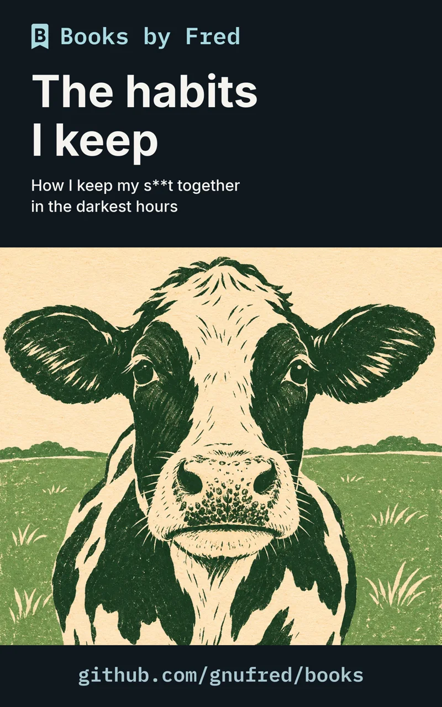

The habits I keep
How I hold myself together in tough times
I spent six years researching physical and mental health hacks and trying them out myself. In this 10-minute read, I share the ones I still turn to when things get hard. They’re free and easy to try.
Download EPUB